From Imagination to a Coherent 2D Animated Character
Hypothesis: Can an AI-controlled creative process invent one compelling original character
and then reliably render that same character through the canonical poses of a 2D walk cycle?
Part I
Motion Truth
The 8 canonical poses of a standard walk cycle, used as pose references for generation.
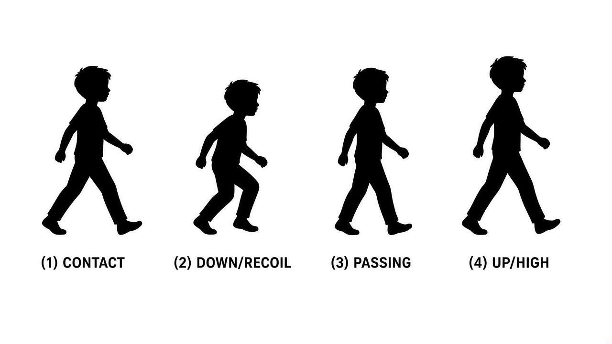
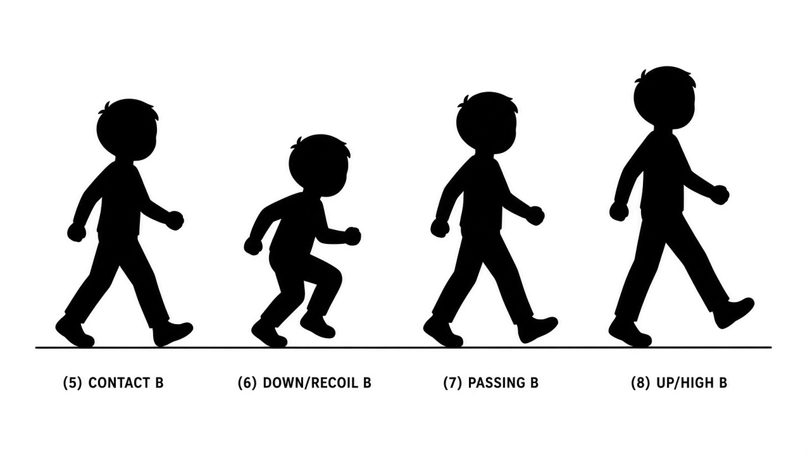
Part II
Pose-Conditioned Generations
Each frame generated independently with character + pose references. Click to enlarge.
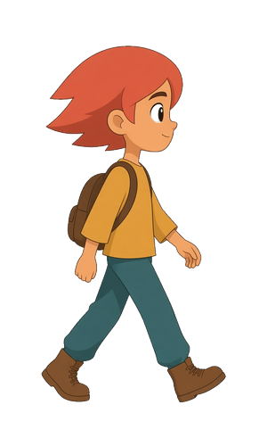
1. Contact A
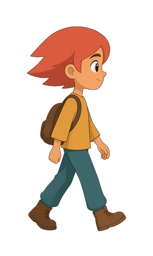
2. Down A
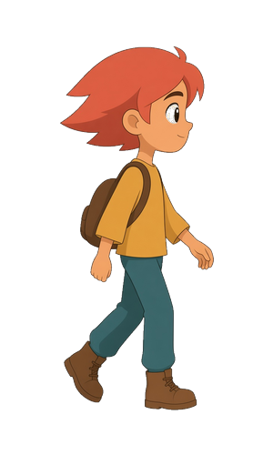
3. Passing A
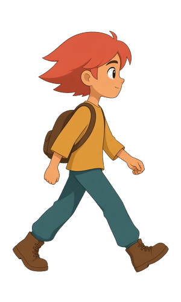
4. Up A
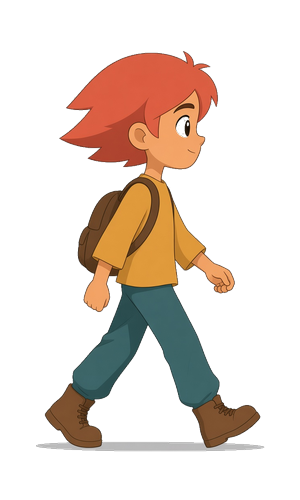
5. Contact B
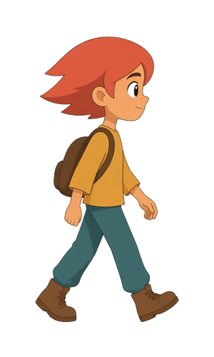
6. Down B
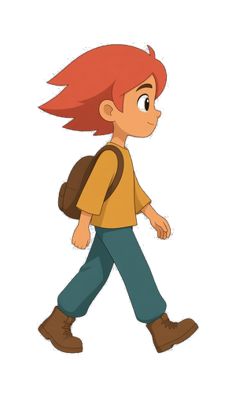
7. Passing B
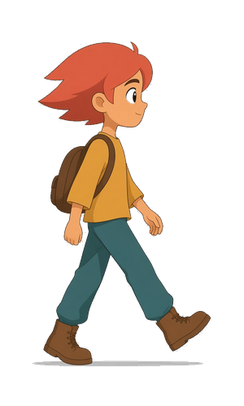
8. Up B
Part III
The Amalgamated Result
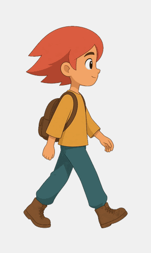
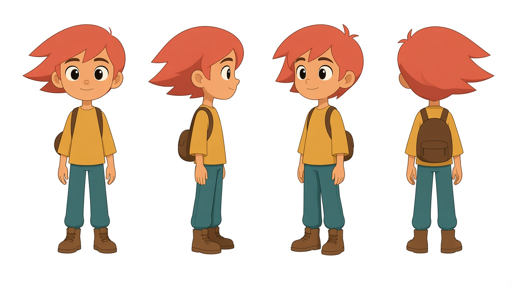
Frozen Character Reference
Part IV
Experimental Results
8/8
Frames Accepted
1
Attempt per Pose
2.6%
Scale Variance
0
Identity Drift
✓ Experiment Successful
The hypothesis is supported. An AI-controlled creative process successfully:
Invented an original character (Pip Starling) through structured visual development
Preserved character identity across 8 independent pose generations
Produced a coherent walking animation from independently generated frames
Achieved this within a constrained retry budget (8 attempts for 8 frames)